hoteldata <- read.csv("_data/hotel_bookings.csv", stringsAsFactors=TRUE)Final Project DACSS601
Introduction
For my project, I analyzed the hotel booking demand dataset, comprising over 119,000 reservations from two prestigious hotels in Portugal: a Resort Hotel and a City Hotel in Lisbon. The dataset spans check-in dates from July 2015 to August 2017, providing a comprehensive view of booking trends and guest preferences during this period. The primary research questions addressed include identifying the optimal time of year for booking hotels in Portugal, the most common distribution channels for bookings, peak months for hotel occupancy, the top countries of origin for guests, and potential factors contributing to high cancellation rates.
Importing Packages
I utilized various R packages such as tidyverse, ggplot2, and readr to import, clean, and visualize the data.
Loading in the Data set
The dataset was loaded into R as a tibble for efficient data manipulation and analysis.
hoteldata <- as_tibble(hoteldata)
glimpse(hoteldata)Rows: 119,390
Columns: 32
$ hotel <fct> Resort Hotel, Resort Hotel, Resort Hote…
$ is_canceled <int> 0, 0, 0, 0, 0, 0, 0, 0, 1, 1, 1, 0, 0, …
$ lead_time <int> 342, 737, 7, 13, 14, 14, 0, 9, 85, 75, …
$ arrival_date_year <int> 2015, 2015, 2015, 2015, 2015, 2015, 201…
$ arrival_date_month <fct> July, July, July, July, July, July, Jul…
$ arrival_date_week_number <int> 27, 27, 27, 27, 27, 27, 27, 27, 27, 27,…
$ arrival_date_day_of_month <int> 1, 1, 1, 1, 1, 1, 1, 1, 1, 1, 1, 1, 1, …
$ stays_in_weekend_nights <int> 0, 0, 0, 0, 0, 0, 0, 0, 0, 0, 0, 0, 0, …
$ stays_in_week_nights <int> 0, 0, 1, 1, 2, 2, 2, 2, 3, 3, 4, 4, 4, …
$ adults <int> 2, 2, 1, 1, 2, 2, 2, 2, 2, 2, 2, 2, 2, …
$ children <int> 0, 0, 0, 0, 0, 0, 0, 0, 0, 0, 0, 0, 0, …
$ babies <int> 0, 0, 0, 0, 0, 0, 0, 0, 0, 0, 0, 0, 0, …
$ meal <fct> BB, BB, BB, BB, BB, BB, BB, FB, BB, HB,…
$ country <fct> PRT, PRT, GBR, GBR, GBR, GBR, PRT, PRT,…
$ market_segment <fct> Direct, Direct, Direct, Corporate, Onli…
$ distribution_channel <fct> Direct, Direct, Direct, Corporate, TA/T…
$ is_repeated_guest <int> 0, 0, 0, 0, 0, 0, 0, 0, 0, 0, 0, 0, 0, …
$ previous_cancellations <int> 0, 0, 0, 0, 0, 0, 0, 0, 0, 0, 0, 0, 0, …
$ previous_bookings_not_canceled <int> 0, 0, 0, 0, 0, 0, 0, 0, 0, 0, 0, 0, 0, …
$ reserved_room_type <fct> C, C, A, A, A, A, C, C, A, D, E, D, D, …
$ assigned_room_type <fct> C, C, C, A, A, A, C, C, A, D, E, D, E, …
$ booking_changes <int> 3, 4, 0, 0, 0, 0, 0, 0, 0, 0, 0, 0, 0, …
$ deposit_type <fct> No Deposit, No Deposit, No Deposit, No …
$ agent <fct> NULL, NULL, NULL, 304, 240, 240, NULL, …
$ company <fct> NULL, NULL, NULL, NULL, NULL, NULL, NUL…
$ days_in_waiting_list <int> 0, 0, 0, 0, 0, 0, 0, 0, 0, 0, 0, 0, 0, …
$ customer_type <fct> Transient, Transient, Transient, Transi…
$ adr <dbl> 0.00, 0.00, 75.00, 75.00, 98.00, 98.00,…
$ required_car_parking_spaces <int> 0, 0, 0, 0, 0, 0, 0, 0, 0, 0, 0, 0, 0, …
$ total_of_special_requests <int> 0, 0, 0, 0, 1, 1, 0, 1, 1, 0, 0, 0, 3, …
$ reservation_status <fct> Check-Out, Check-Out, Check-Out, Check-…
$ reservation_status_date <fct> 2015-07-01, 2015-07-01, 2015-07-02, 201…Displaying the first 10 elements of the data set gives a better idea.
head(hoteldata, n=10)# A tibble: 10 × 32
hotel is_canceled lead_time arrival_date_year arrival_date_month
<fct> <int> <int> <int> <fct>
1 Resort Hotel 0 342 2015 July
2 Resort Hotel 0 737 2015 July
3 Resort Hotel 0 7 2015 July
4 Resort Hotel 0 13 2015 July
5 Resort Hotel 0 14 2015 July
6 Resort Hotel 0 14 2015 July
7 Resort Hotel 0 0 2015 July
8 Resort Hotel 0 9 2015 July
9 Resort Hotel 1 85 2015 July
10 Resort Hotel 1 75 2015 July
# ℹ 27 more variables: arrival_date_week_number <int>,
# arrival_date_day_of_month <int>, stays_in_weekend_nights <int>,
# stays_in_week_nights <int>, adults <int>, children <int>, babies <int>,
# meal <fct>, country <fct>, market_segment <fct>,
# distribution_channel <fct>, is_repeated_guest <int>,
# previous_cancellations <int>, previous_bookings_not_canceled <int>,
# reserved_room_type <fct>, assigned_room_type <fct>, …Displaying the number of rows, columns and summary of the data set.
dim(hoteldata)[1] 119390 32summary(hoteldata) hotel is_canceled lead_time arrival_date_year
City Hotel :79330 Min. :0.0000 Min. : 0 Min. :2015
Resort Hotel:40060 1st Qu.:0.0000 1st Qu.: 18 1st Qu.:2016
Median :0.0000 Median : 69 Median :2016
Mean :0.3704 Mean :104 Mean :2016
3rd Qu.:1.0000 3rd Qu.:160 3rd Qu.:2017
Max. :1.0000 Max. :737 Max. :2017
arrival_date_month arrival_date_week_number arrival_date_day_of_month
August :13877 Min. : 1.00 Min. : 1.0
July :12661 1st Qu.:16.00 1st Qu.: 8.0
May :11791 Median :28.00 Median :16.0
October:11160 Mean :27.17 Mean :15.8
April :11089 3rd Qu.:38.00 3rd Qu.:23.0
June :10939 Max. :53.00 Max. :31.0
(Other):47873
stays_in_weekend_nights stays_in_week_nights adults
Min. : 0.0000 Min. : 0.0 Min. : 0.000
1st Qu.: 0.0000 1st Qu.: 1.0 1st Qu.: 2.000
Median : 1.0000 Median : 2.0 Median : 2.000
Mean : 0.9276 Mean : 2.5 Mean : 1.856
3rd Qu.: 2.0000 3rd Qu.: 3.0 3rd Qu.: 2.000
Max. :19.0000 Max. :50.0 Max. :55.000
children babies meal country
Min. : 0.0000 Min. : 0.000000 BB :92310 PRT :48590
1st Qu.: 0.0000 1st Qu.: 0.000000 FB : 798 GBR :12129
Median : 0.0000 Median : 0.000000 HB :14463 FRA :10415
Mean : 0.1039 Mean : 0.007949 SC :10650 ESP : 8568
3rd Qu.: 0.0000 3rd Qu.: 0.000000 Undefined: 1169 DEU : 7287
Max. :10.0000 Max. :10.000000 ITA : 3766
NA's :4 (Other):28635
market_segment distribution_channel is_repeated_guest
Online TA :56477 Corporate: 6677 Min. :0.00000
Offline TA/TO:24219 Direct :14645 1st Qu.:0.00000
Groups :19811 GDS : 193 Median :0.00000
Direct :12606 TA/TO :97870 Mean :0.03191
Corporate : 5295 Undefined: 5 3rd Qu.:0.00000
Complementary: 743 Max. :1.00000
(Other) : 239
previous_cancellations previous_bookings_not_canceled reserved_room_type
Min. : 0.00000 Min. : 0.0000 A :85994
1st Qu.: 0.00000 1st Qu.: 0.0000 D :19201
Median : 0.00000 Median : 0.0000 E : 6535
Mean : 0.08712 Mean : 0.1371 F : 2897
3rd Qu.: 0.00000 3rd Qu.: 0.0000 G : 2094
Max. :26.00000 Max. :72.0000 B : 1118
(Other): 1551
assigned_room_type booking_changes deposit_type agent
A :74053 Min. : 0.0000 No Deposit:104641 9 :31961
D :25322 1st Qu.: 0.0000 Non Refund: 14587 NULL :16340
E : 7806 Median : 0.0000 Refundable: 162 240 :13922
F : 3751 Mean : 0.2211 1 : 7191
G : 2553 3rd Qu.: 0.0000 14 : 3640
C : 2375 Max. :21.0000 7 : 3539
(Other): 3530 (Other):42797
company days_in_waiting_list customer_type
NULL :112593 Min. : 0.000 Contract : 4076
40 : 927 1st Qu.: 0.000 Group : 577
223 : 784 Median : 0.000 Transient :89613
67 : 267 Mean : 2.321 Transient-Party:25124
45 : 250 3rd Qu.: 0.000
153 : 215 Max. :391.000
(Other): 4354
adr required_car_parking_spaces total_of_special_requests
Min. : -6.38 Min. :0.00000 Min. :0.0000
1st Qu.: 69.29 1st Qu.:0.00000 1st Qu.:0.0000
Median : 94.58 Median :0.00000 Median :0.0000
Mean : 101.83 Mean :0.06252 Mean :0.5714
3rd Qu.: 126.00 3rd Qu.:0.00000 3rd Qu.:1.0000
Max. :5400.00 Max. :8.00000 Max. :5.0000
reservation_status reservation_status_date
Canceled :43017 2015-10-21: 1461
Check-Out:75166 2015-07-06: 805
No-Show : 1207 2016-11-25: 790
2015-01-01: 763
2016-01-18: 625
2015-07-02: 469
(Other) :114477 The hotel data set is composed of 119,390 rows and 32 columns.
Tidying the Data
Before analysis, I conducted data tidying processes to ensure data accuracy and consistency. This involved addressing missing values, removing unnecessary columns like ‘Company’ due to high null values, and refining categorical variables such as meal options and room types.
table(hoteldata$hotel)
City Hotel Resort Hotel
79330 40060 table(hoteldata$meal)
BB FB HB SC Undefined
92310 798 14463 10650 1169 table(hoteldata$arrival_date_year)
2015 2016 2017
21996 56707 40687 Here there are four meal options: BB: Bed and Breakfast (Breakfast is included in the hotel’s price). FB: Full Board (Breakfast, lunch and dinner are all included in the hotel’s price). HB: Half Board (Price includes breakfast and dinner in the hotel’s price). SC / Undefined: Self Catering meals.
# Replacing the undefined values with "SC" and then displaying it's unique values
hoteldata$meal <-replace(hoteldata$meal,hoteldata$meal=='Undefined','SC')
hoteldata$meal <- factor(hoteldata$meal)
levels(hoteldata$meal)[1] "BB" "FB" "HB" "SC"Removing unwanted columns
Columns deemed irrelevant or containing excessive null values, such as ‘Company’ and ‘arrival_date_week_number,’ were removed to streamline the dataset and focus on essential variables for analysis.
hoteldata = subset(hoteldata, select = -c(company, arrival_date_week_number))Dealing with missing values
I handled missing values in the dataset, particularly in the ‘agent’ column, by removing rows with null values. Additionally, I replaced NaN values in the ‘children’ column with corresponding values from the ‘babies’ column to maintain data integrity.
hoteldata <- hoteldata[!hoteldata$agent == "NULL", ]
glimpse(hoteldata)Rows: 103,050
Columns: 30
$ hotel <fct> Resort Hotel, Resort Hotel, Resort Hote…
$ is_canceled <int> 0, 0, 0, 0, 1, 1, 1, 0, 0, 0, 0, 0, 0, …
$ lead_time <int> 13, 14, 14, 9, 85, 75, 23, 35, 68, 18, …
$ arrival_date_year <int> 2015, 2015, 2015, 2015, 2015, 2015, 201…
$ arrival_date_month <fct> July, July, July, July, July, July, Jul…
$ arrival_date_day_of_month <int> 1, 1, 1, 1, 1, 1, 1, 1, 1, 1, 1, 1, 1, …
$ stays_in_weekend_nights <int> 0, 0, 0, 0, 0, 0, 0, 0, 0, 0, 0, 0, 0, …
$ stays_in_week_nights <int> 1, 2, 2, 2, 3, 3, 4, 4, 4, 4, 4, 4, 4, …
$ adults <int> 1, 2, 2, 2, 2, 2, 2, 2, 2, 2, 2, 2, 2, …
$ children <int> 0, 0, 0, 0, 0, 0, 0, 0, 0, 1, 0, 0, 0, …
$ babies <int> 0, 0, 0, 0, 0, 0, 0, 0, 0, 0, 0, 0, 0, …
$ meal <fct> BB, BB, BB, FB, BB, HB, BB, HB, BB, HB,…
$ country <fct> GBR, GBR, GBR, PRT, PRT, PRT, PRT, PRT,…
$ market_segment <fct> Corporate, Online TA, Online TA, Direct…
$ distribution_channel <fct> Corporate, TA/TO, TA/TO, Direct, TA/TO,…
$ is_repeated_guest <int> 0, 0, 0, 0, 0, 0, 0, 0, 0, 0, 0, 0, 0, …
$ previous_cancellations <int> 0, 0, 0, 0, 0, 0, 0, 0, 0, 0, 0, 0, 0, …
$ previous_bookings_not_canceled <int> 0, 0, 0, 0, 0, 0, 0, 0, 0, 0, 0, 0, 0, …
$ reserved_room_type <fct> A, A, A, C, A, D, E, D, D, G, E, D, E, …
$ assigned_room_type <fct> A, A, A, C, A, D, E, D, E, G, E, E, E, …
$ booking_changes <int> 0, 0, 0, 0, 0, 0, 0, 0, 0, 1, 0, 0, 0, …
$ deposit_type <fct> No Deposit, No Deposit, No Deposit, No …
$ agent <fct> 304, 240, 240, 303, 240, 15, 240, 240, …
$ days_in_waiting_list <int> 0, 0, 0, 0, 0, 0, 0, 0, 0, 0, 0, 0, 0, …
$ customer_type <fct> Transient, Transient, Transient, Transi…
$ adr <dbl> 75.00, 98.00, 98.00, 103.00, 82.00, 105…
$ required_car_parking_spaces <int> 0, 0, 0, 0, 0, 0, 0, 0, 0, 0, 0, 0, 0, …
$ total_of_special_requests <int> 0, 1, 1, 1, 1, 0, 0, 0, 3, 1, 0, 3, 0, …
$ reservation_status <fct> Check-Out, Check-Out, Check-Out, Check-…
$ reservation_status_date <fct> 2015-07-02, 2015-07-03, 2015-07-03, 201…Checking if there are any missing values (NA/NaN) in the data set. Finding the number of missing values in every column.
colSums(is.na(hoteldata)) hotel is_canceled
0 0
lead_time arrival_date_year
0 0
arrival_date_month arrival_date_day_of_month
0 0
stays_in_weekend_nights stays_in_week_nights
0 0
adults children
0 2
babies meal
0 0
country market_segment
0 0
distribution_channel is_repeated_guest
0 0
previous_cancellations previous_bookings_not_canceled
0 0
reserved_room_type assigned_room_type
0 0
booking_changes deposit_type
0 0
agent days_in_waiting_list
0 0
customer_type adr
0 0
required_car_parking_spaces total_of_special_requests
0 0
reservation_status reservation_status_date
0 0 We can observe that only one column, the one with ‘children’ as the column name, seems to have values missing. Substituting the values in the children column for the ones in the babies column.
n <- length(hoteldata)
for (i in n) {
if (is.na(hoteldata$children[i]))
hoteldata$children[i] <- hoteldata$babies
}# Checking for outliers
hoteldata%>%
filter(adr>800)# A tibble: 1 × 30
hotel is_canceled lead_time arrival_date_year arrival_date_month
<fct> <int> <int> <int> <fct>
1 City Hotel 1 35 2016 March
# ℹ 25 more variables: arrival_date_day_of_month <int>,
# stays_in_weekend_nights <int>, stays_in_week_nights <int>, adults <int>,
# children <int>, babies <int>, meal <fct>, country <fct>,
# market_segment <fct>, distribution_channel <fct>, is_repeated_guest <int>,
# previous_cancellations <int>, previous_bookings_not_canceled <int>,
# reserved_room_type <fct>, assigned_room_type <fct>, booking_changes <int>,
# deposit_type <fct>, agent <fct>, days_in_waiting_list <int>, …Here it is visible that there in only one outlier where the average daily rate (adr) is greater than 800. Updating the outlier value by the mean of adr (average daily rate).
hoteldata = hoteldata%>%
mutate(adr = replace(adr, adr>1000, mean(adr)))hoteldata%>%group_by(arrival_date_month, arrival_date_year)%>%tally()# A tibble: 26 × 3
# Groups: arrival_date_month [12]
arrival_date_month arrival_date_year n
<fct> <int> <int>
1 April 2016 4854
2 April 2017 4904
3 August 2015 3357
4 August 2016 4692
5 August 2017 4633
6 December 2015 2367
7 December 2016 3264
8 February 2016 3056
9 February 2017 3405
10 January 2016 1784
# ℹ 16 more rowsJuly and August are the only 2 months where they had bookings all the three years 2015,2016,2017. This could typically corelate with the weather and summer breaks for children.
Exploratory Data Analysis
I performed comprehensive exploratory data analysis (EDA) to uncover insights into hotel booking patterns, customer behavior, and market trends. This included visualizations depicting booking distributions by hotel type, booking status, market segments, and geographical origin of guests.
##Visualizing Booking Trends My approach to exploratory data analysis (EDA) was thorough and aimed at revealing deep insights into hotel booking patterns, customer behavior, and market trends. Through a series of insightful visualizations, I delved into various aspects such as booking distributions based on hotel types, booking statuses, market segments, and the geographical origins of guests. These visualizations not only provided a clear picture of the current booking landscape but also allowed for the identification of key trends and patterns that can inform strategic decision-making in the hospitality industry.
table(hoteldata$hotel)
City Hotel Resort Hotel
71199 31851 Visualizing this graphically gives us a better picture.
#The percentage of city hotels is more
ggplot(hoteldata, aes(x = hotel)) + geom_bar(mapping = aes(x = hotel), color = "blue", fill= "black", stat = "count") + labs(title = "Bookings based on hotel type", x= "Type of hotel", y= "Number of bookings")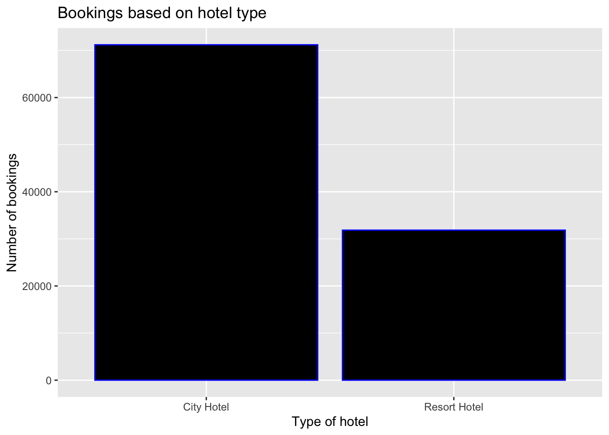
We can see that City Hotel has been booked more times than the Resort Hotel between 2015 - 2017. This uneven distribution was the primary reason why I chose this data set.
#Check the number of cancellations made by respective hotels.
table(hoteldata$is_canceled, hoteldata$hotel)
City Hotel Resort Hotel
0 40706 22150
1 30493 9701#Visualizing the number of cancellations based on type of hotel.
ggplot(data = hoteldata,
aes(
x = hotel,
y = prop.table(stat(count)),
fill = factor(is_canceled), width = 0.5,
label = scales::percent(prop.table(stat(count)))
)) +
geom_bar(position = position_dodge()) +
geom_text(
stat = "count",
position = position_dodge(.9),
vjust = -0.5,
size = 3
) + scale_y_continuous(labels = scales::percent) +
labs(title = "Status of Cancellations based on Hotel",
x = "Type of Hotel",
y = "Count") +
theme_classic() +
scale_fill_discrete(
name = "Booking Status",
labels = c("Cancelled", "Not Cancelled")
)Warning: `stat(count)` was deprecated in ggplot2 3.4.0.
ℹ Please use `after_stat(count)` instead.
It is evident that City Hotel has more bookings than the Resort Hotel. However, the number of ‘Cancelled’ bookings is more for both the hotels than the bookings ‘Not Cancelled’. This could be related to something after the booking has been made.
Lead Time is the amount of time between the booking made and the actual date of check in.
ggplot(data = hoteldata, aes(x = hotel,y = lead_time,fill =factor(is_canceled))) + geom_boxplot(position = position_dodge()) +
labs(title = "Cancellations made after booking (lead time)",
x = "Type of Hotel",y = "Lead Time") + scale_fill_discrete(name = "Booking Status",breaks = c("0", "1"),labels = c("Cancelled", "Not Cancelled")) + theme_classic()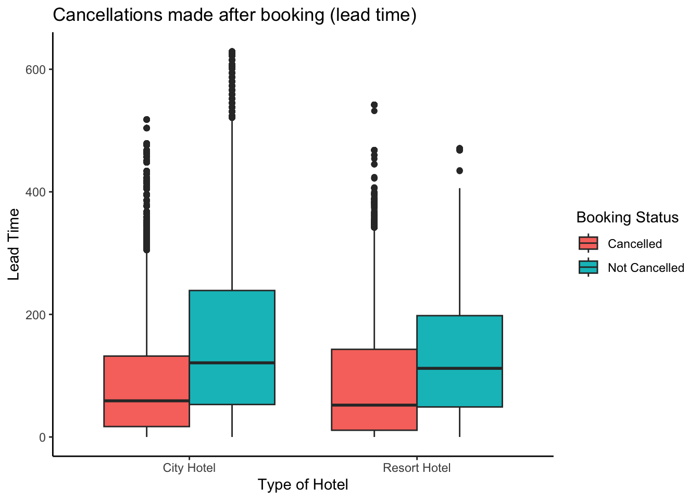
Lead time is the actual time between the day when booking made and actual day of checking in. From the plot we can see that cancellation of bookings normally occurs soon after booking. The cancellations seem to be less when enough time has passed after the booking has been made.
Checking the unique values in the arrival_date_year column.
unique(hoteldata$arrival_date_year)[1] 2015 2016 2017Checking which year had most bookings.
ggplot(hoteldata, aes(x = arrival_date_year)) + geom_bar(mapping = aes(x = arrival_date_year, fill = hotel), stat = "count") + labs(title = " Total bookings based on Year", x= "Year", y= "Number of bookings")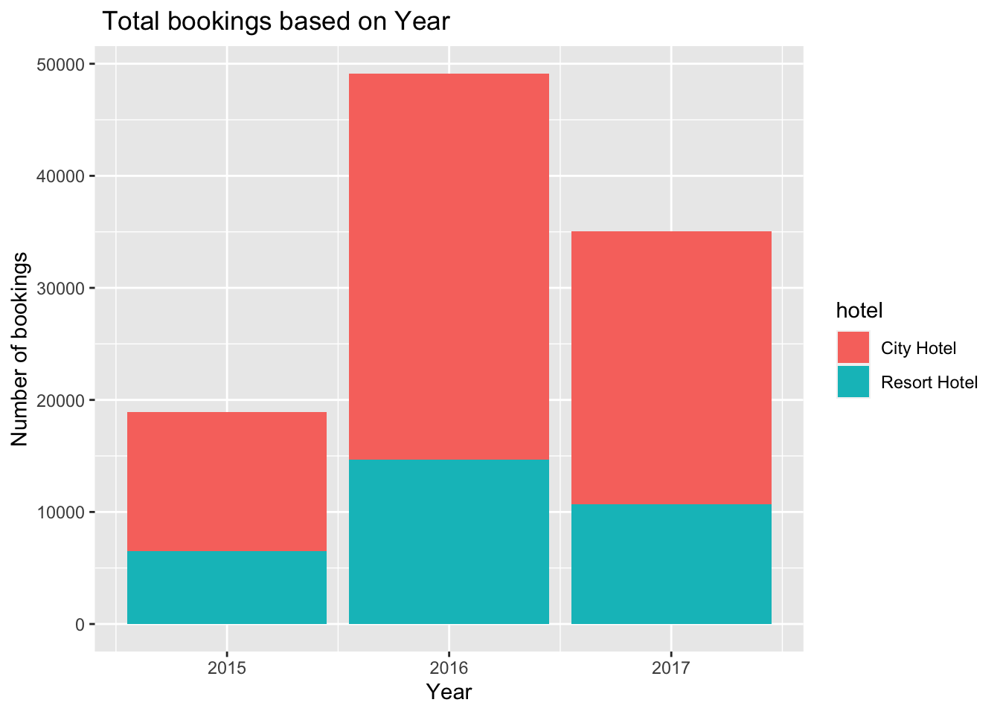
Comparison of year of Arrival date versus cancellation, year 2016 is the one with the most bookings as well as cancellations. More than double bookings were made in 2016, compared to the previous year. But the bookings decreased by almost 15% the next year. Inference: Bookings over the years are consistently greater for city hotels than resort hotels and do not increase proportionately over the years.
It will be interesting to see which month was most favoured by visitors to travel. We will select the arrival_date_month feature to answer this question and get its value count. We must first sort the data because it is not organized according to the order of months.
#Arranging months in correct order :
hoteldata$arrival_date_month <-
factor(hoteldata$arrival_date_month, levels = month.name)
# Visualize Hotel bookings on Monthly basis
arrival_date_month <- hoteldata$arrival_date_month
reservemonth<-table(arrival_date_month)
reservemonth<-data.frame(reservemonth)
reservemonth$arrival_date_month<-factor(reservemonth$arrival_date_month, levels=month.name)
ggplot(reservemonth, aes(x=arrival_date_month, y=Freq, group=1)) + geom_line(col="navy") +
ggtitle("Reservations by Arrival Month") + ylab("Count") + xlab("Month")+
theme(axis.text.x=element_text(angle=40))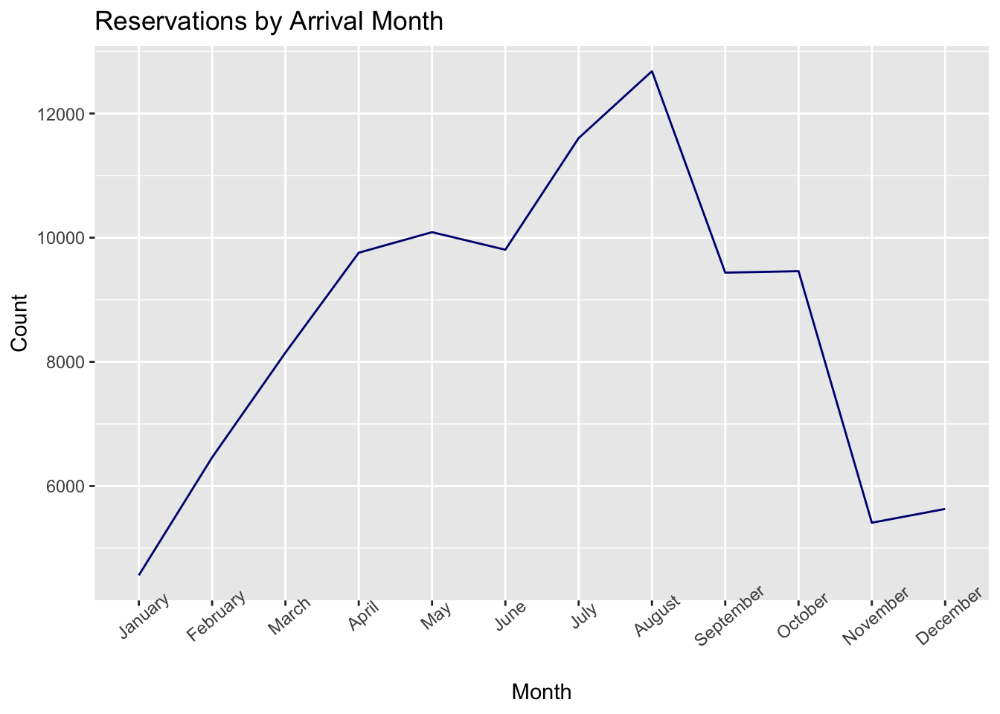
ggplot(data = hoteldata, aes(x = arrival_date_month)) +
geom_bar(fill = "black", alpha = 0.1) + geom_text(stat = "count", aes(label = ..count..), hjust = 3) +
coord_flip() + labs(title = "Month Wise Booking Request",
x = "Month",
y = "Count") +
theme_classic()Warning: The dot-dot notation (`..count..`) was deprecated in ggplot2 3.4.0.
ℹ Please use `after_stat(count)` instead.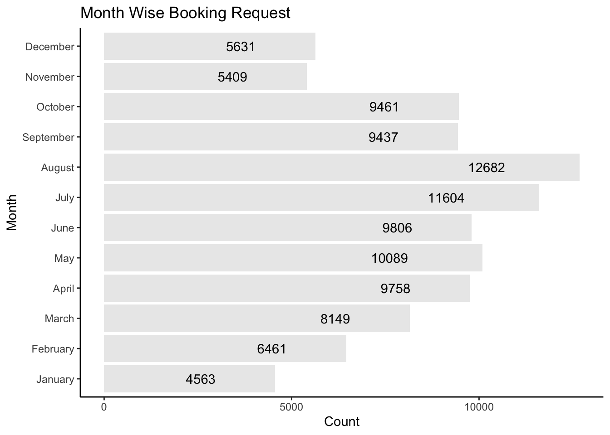
We can observe that August and July are the most frequently booked months. Weather variations can be to blame for this. The winter season saw few reservations (November, December, and January). The month of August receives the most reservations because it is when most kids take their summer vacations. The month with the slightest reservations is January, which may be related to the climate.
arrival_date_month <- hoteldata$arrival_date_month
ggplot(hoteldata, aes(x=arrival_date_month, fill = hotel)) +
geom_bar(position = position_dodge(), stat = "count") +
labs(title = "Booking Status by Month",
x = "Month",
y = "Count") +
theme(axis.text.x = element_text(angle = 90, hjust = 1),
panel.background = element_blank())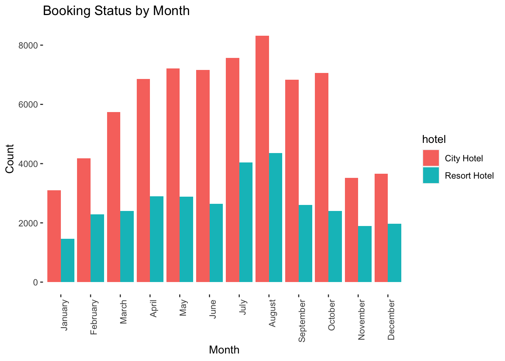
Seasonally, the combined revenue for the two hotels rose from year to year. This is particularly crucial for the resort hotel because the majority of its annual revenue is generated during the summer. The city hotel’s seasonal revenue is relatively stable during the fall, spring, and summer seasons but decreases during the winter.
Shows when there are lesser days on the waiting list, there is a lesser number of cancellations.
#Histogram illustrating Days in waiting list and cancellations
hoteldata%>%
filter(days_in_waiting_list>1)%>%
ggplot(aes(x=days_in_waiting_list,fill= factor(is_canceled)))+
geom_histogram(binwidth = 10) + labs(title = "Visualising days in waiting list and cancellations", x= "Days in waiting list", y= "No. of cancellations")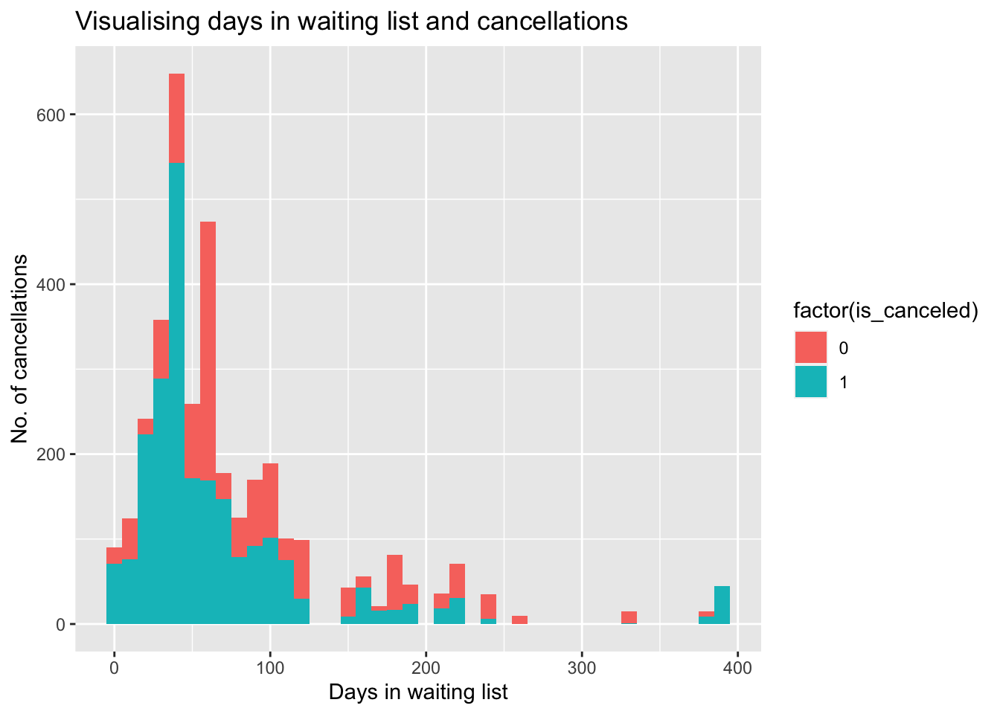
Inference: From this we can infer that when the number of days in the waiting list is low there seems to be lower cancellations. This could also be related to cancellation when they were informed they would not get the requested room.
#Checking the purpose of the reservation and visualizing it.
ggplot(hoteldata, aes(y= market_segment)) + geom_bar(mapping = aes(y= market_segment), colour = "black", stat = "count", width = 0.5) + theme(axis.text.x = element_text(hjust = 0.2)) + labs(title = "Segment wise booking", y= "market segment")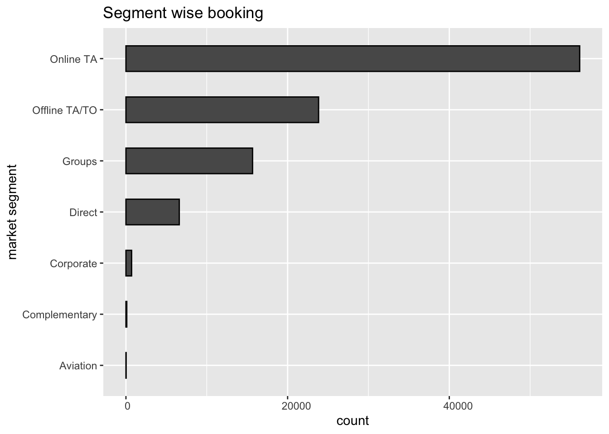
Indirect bookings through online and offline travel agents are higher than direct bookings, and the same is true with group bookings, which are also high. For most countries and continents, online travel companies were the most common way to make reservations. Relying on these conclusions, the hotel advertising department might direct most of its marketing funds to these online travel agencies to draw current and potential visitors to their hotels.
#Checking the assigned room types:
hoteldata%>%
ggplot(aes(x = assigned_room_type, fill = factor(is_canceled))) +
geom_bar() + labs(title = "Bookings based on assigned room type", x= "Assigned room type", y= "Number of bookings")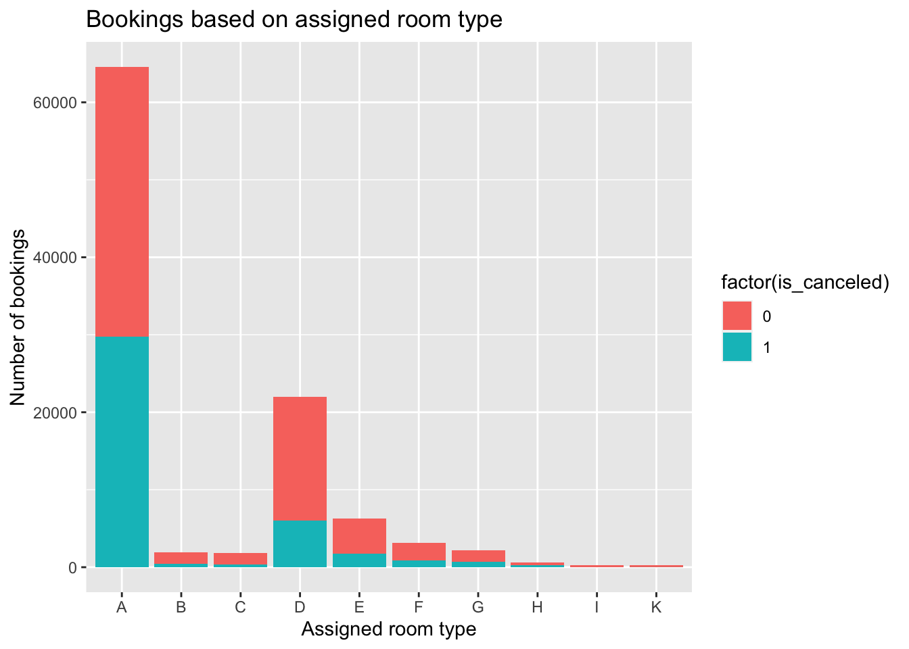
Inference: We can observe that room type ‘A’ was booked the most by customers. However, the number of cancellations of room type ‘A’ also is the highest. This could be due to the non-availability of the room, or the customer could have been reassigned to another room, which could be the reason for such a high number of cancellations.
Visualizing the total number of nights stayed at the City Hotel and the Resort Hotel. We calculate total number of nights stayed by adding values of two columns stays_in_weekend_nights and stays_in_week_nights.
totalnights <- hoteldata$stays_in_weekend_nights + hoteldata$stays_in_week_nights
totalcost <- totalnights*hoteldata$adr
hoteldata%>%mutate(totalnights, totalcost)# A tibble: 103,050 × 32
hotel is_canceled lead_time arrival_date_year arrival_date_month
<fct> <int> <int> <int> <fct>
1 Resort Hotel 0 13 2015 July
2 Resort Hotel 0 14 2015 July
3 Resort Hotel 0 14 2015 July
4 Resort Hotel 0 9 2015 July
5 Resort Hotel 1 85 2015 July
6 Resort Hotel 1 75 2015 July
7 Resort Hotel 1 23 2015 July
8 Resort Hotel 0 35 2015 July
9 Resort Hotel 0 68 2015 July
10 Resort Hotel 0 18 2015 July
# ℹ 103,040 more rows
# ℹ 27 more variables: arrival_date_day_of_month <int>,
# stays_in_weekend_nights <int>, stays_in_week_nights <int>, adults <int>,
# children <int>, babies <int>, meal <fct>, country <fct>,
# market_segment <fct>, distribution_channel <fct>, is_repeated_guest <int>,
# previous_cancellations <int>, previous_bookings_not_canceled <int>,
# reserved_room_type <fct>, assigned_room_type <fct>, …ggplot(hoteldata, aes(x= totalnights, y= totalcost, color = hotel )) + geom_point(alpha=0.5) + labs(title = "Bookings based total nights stayed", x= "Total number of nights stayed", y= "Total cost") + theme(axis.text.x = element_text(angle = 90, hjust = 1),
panel.background = element_blank())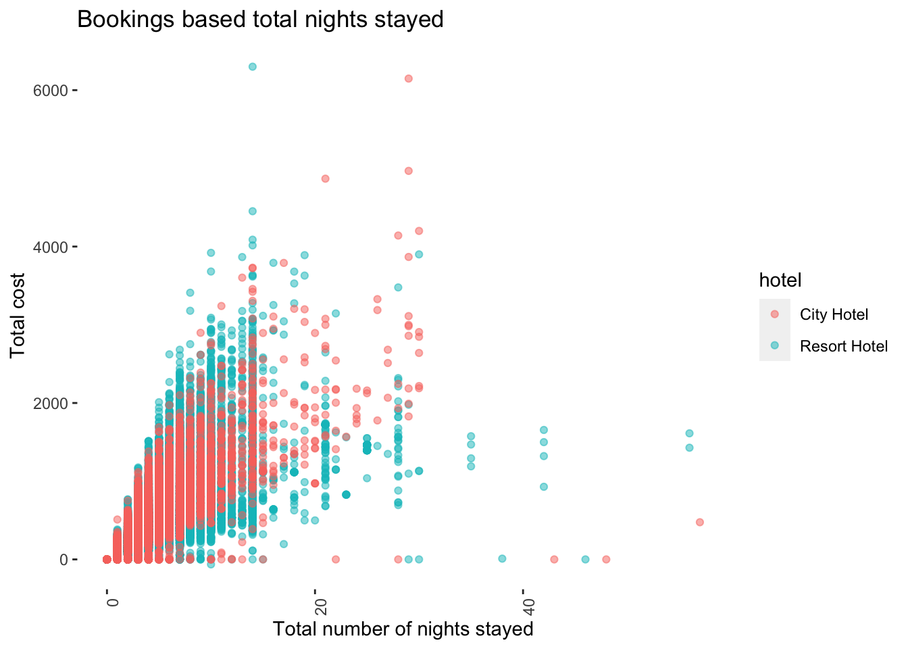
Inference: From this we can see majority of the customers stayed for a period less than 2 weeks and most people stayed at the city hotel.
#Exploring the data across different market segments
ggplot(hoteldata, aes(x=totalnights,y=totalcost,shape=hotel,color=is_canceled))+
geom_point()+
facet_wrap(~market_segment)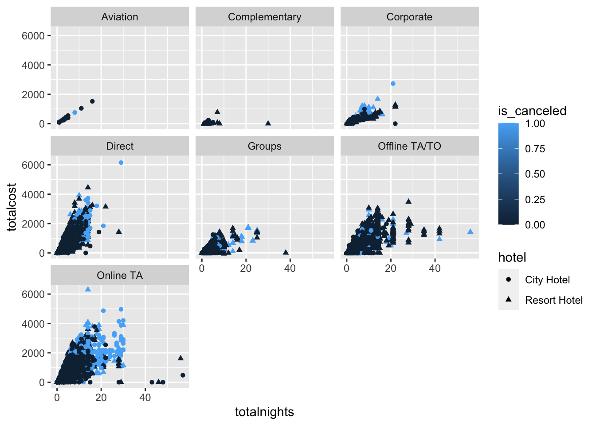
Here we can see nobody from Aviation segment stayed at the Resort Hotel. Majority of the customers that booked through Offline TA/TO and Online TA have more cancellations than other market segments. Groups segment has cancellation rate around 50%.
#Number of days in waiting list based on market segment
ggplot(hoteldata, aes(x = market_segment, y = days_in_waiting_list)) +
geom_point()+
ylab('Number of days in waiting list')+
xlab('Market segment')+
ggtitle('Number of days in waiting list based on market segment') 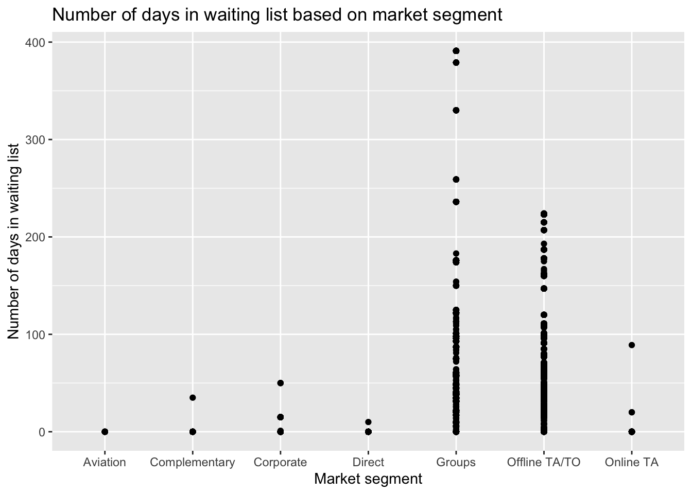
The shortest period on the waiting list is in the aviation sector. The explanation may be because airlines have to arrange stay and meals for their employees or passengers, and therefore, they do not want to book hotels that would put them on a waiting list.
#Visulizing bookings based on country:
hoteldatasample <- hoteldata[hoteldata$reservation_status == "Check-Out",]
hoteldatasubset <- hoteldata%>%group_by(country)%>%filter(n() >1000)
ggplot(hoteldatasubset, aes(country, fill = hotel)) +
geom_bar(position = position_dodge(), stat = "count") +
labs(title = "Booking Status by Country",
x = "Country",
y = "Count") +
theme(axis.text.x = element_text(angle = 90, hjust = 1),
panel.background = element_blank())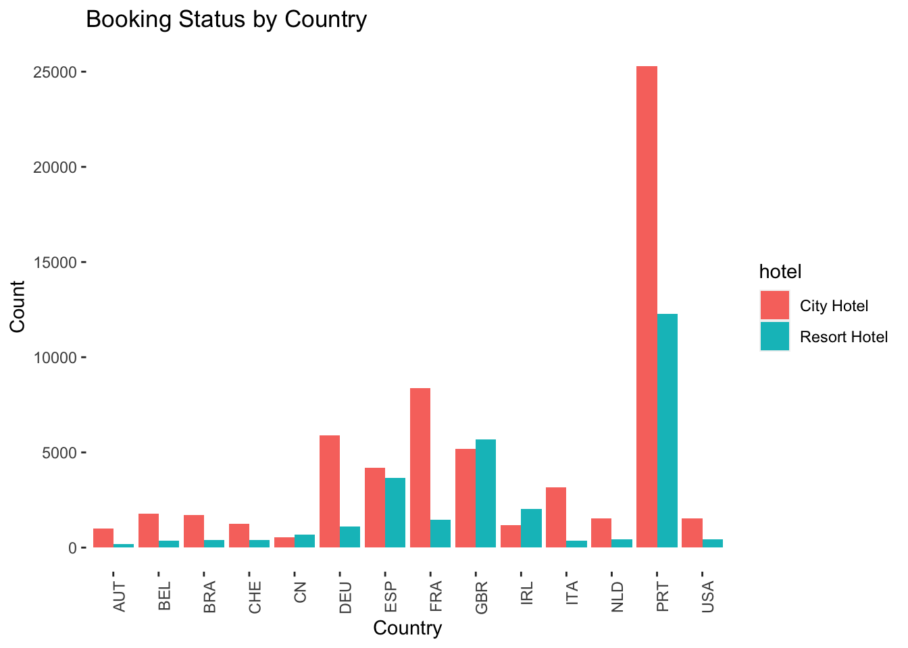
Portugal, UK and France, Spain and Germany are the top countries from most guests come, more than 80% come from these 5 countries. The fact that these hotels are in Portugal may help to explain why most reservations are from European nations, with Portugal accounting for the most significant percentage.
#Visualizing bookings based on customer type:
ggplot(hoteldatasubset, aes(customer_type, fill = hotel)) +
geom_bar(position = position_dodge(), stat = "count") +
labs(title = "Hotel Preference by Customer Type",
x = "Customer Type",
y = "Count") +
theme(axis.text.x = element_text(angle = 90, hjust = 1),
panel.background = element_blank())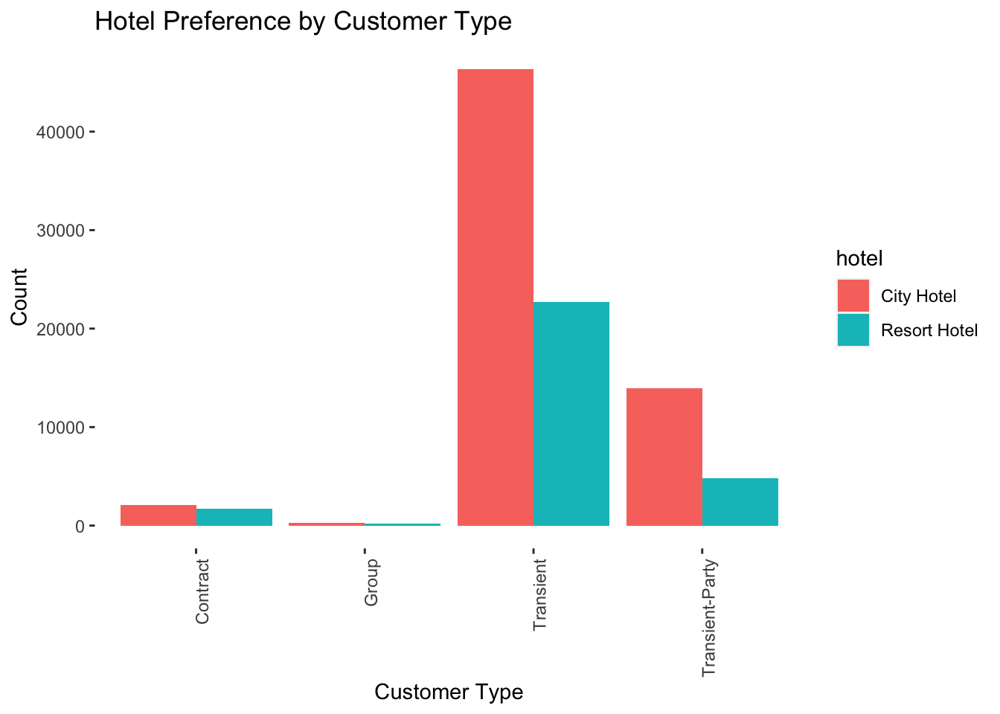
One of the leading market segments, transient guests, are people or groups who book fewer than ten rooms per night. Typically, they are drop-in visitors, last-minute travelers, or people who need to reserve a room at a hotel property for a brief period.
Conclusion
This analysis delved into various aspects of the hotel booking dataset to uncover valuable insights. My exploration aimed to understand the origins of the majority of customers, the prevalent hotel types, the peak booking year, the market segment with the shortest waiting list days, and the busiest months for both city hotels and resorts. One intriguing discovery was the consistent demand for resort hotels throughout the year compared to the fluctuating trend observed in city hotels, contrary to initial expectations.
While this analysis provided valuable insights, there are notable limitations in the dataset. One limitation is the absence of information regarding potential accommodation upgrades or amenities associated with encoded room types. This missing data hinders a comprehensive understanding of customer preferences and their impact on booking behavior. Additionally, the inability to discern specific room features limits the depth of analysis regarding factors influencing guest satisfaction and potential booking cancellations.
Moving forward, refining these insights by incorporating data on accommodation upgrades, amenities, and guest preferences could enhance the predictive accuracy of models and provide more nuanced recommendations for hotel management. Understanding the factors influencing guest satisfaction and booking decisions is crucial in optimizing hotel operations and delivering exceptional guest experiences.
Overall, this analysis underscores the complexity of the hotel booking industry and the importance of leveraging comprehensive data to drive informed decision-making and enhance customer experiences.
Bibliography
https://github.com/hadley/tidyr
https://www.sciencedirect.com/science/article/pii/S2352340918315191
https://www.researchgate.net/publication/329286343_Hotel_booking_demand_datasets